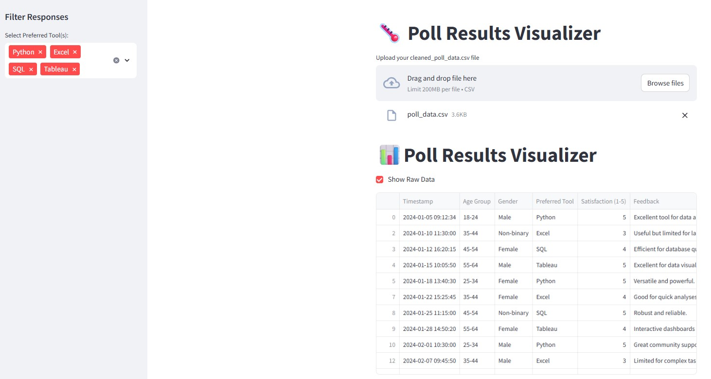
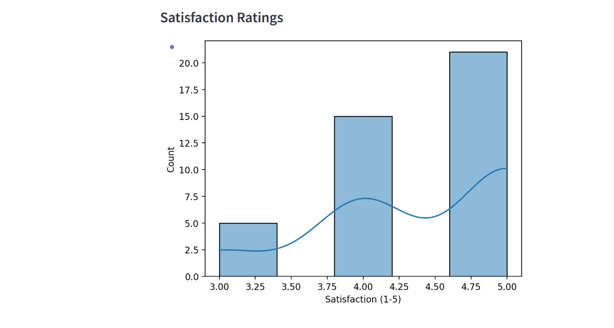
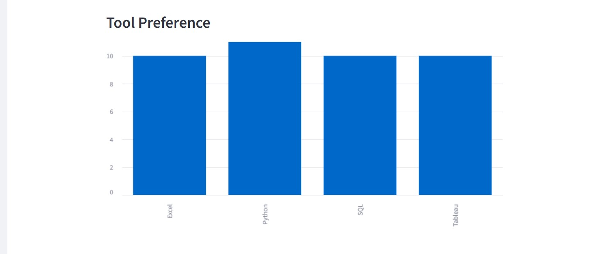
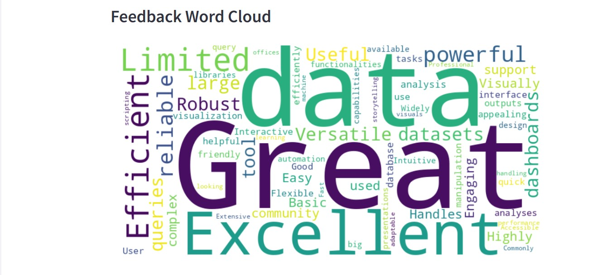
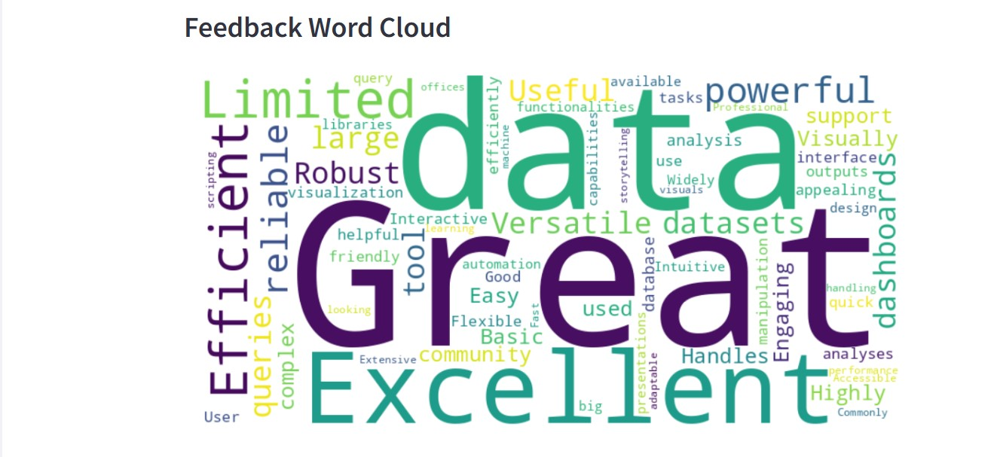

üó≥Ô∏è Poll Results Visualizer
Poll Results Visualizer | Link
● Created a web app using Streamlit to visualize and analyze poll or survey responses in real-time.
● Key features include tool preference bar charts, satisfaction histograms, time-based response trends, and feedback word clouds.
● Sidebar filtering by preferred tools and a raw data toggle enhance interactivity.
● Supports CSV uploads with dynamic chart rendering and natural language feedback visualization.
Technologies: Streamlit, Pandas, Matplotlib, Seaborn, WordCloud
CSV File Structure:
Timestamp,Age Group,Gender,Preferred Tool,Satisfaction (1-5),Feedback,Date,Feedback Length
2024-01-05 09:12:34,18-24,Male,Python,5,Excellent tool for data analysis.,2024-01-05,33
2024-01-07 14:45:22,25-34,Female,R,4,Great for statistical modeling.,2024-01-07,31
2024-01-10 11:30:00,35-44,Non-binary,Excel,3,Useful but limited for large datasets.,2024-01-10,38
2024-01-12 16:20:15,45-54,Female,SQL,4,Efficient for database queries.,2024-01-12,31
Project Files: Poll
Output:
   
